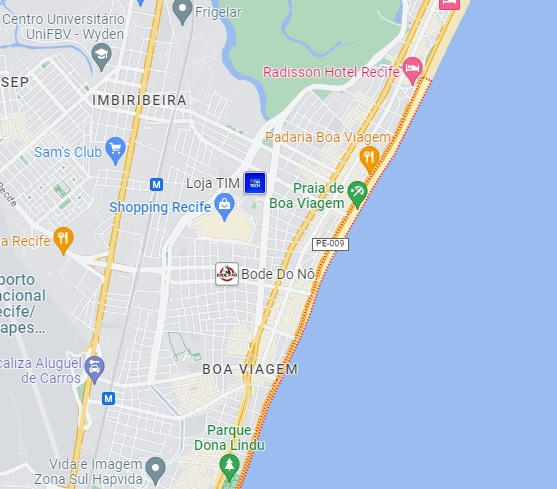

A Praia de Boa Viagem é a praia urbana mais famosa da cidade do Recife, capital do estado brasileiro de Pernambuco. Com aproximadamente oito quilômetros (8 km) de extensão, está situada no bairro homônimo, Zona Sul da capital pernambucana, delimitada pela Praia do Pina ao norte e pela Praia de Piedade ao sul.
A maior parte da Praia de Boa Viagem é protegida por uma barreira de recifes naturais, que deu nome à cidade.